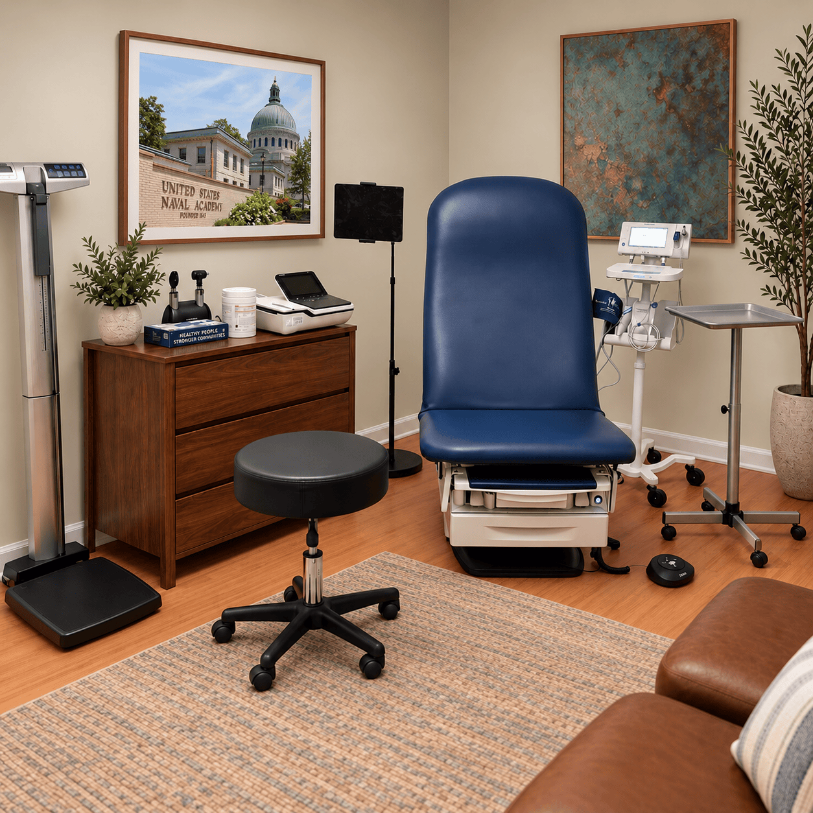

Concierge medicine from a physician you know and trust.
Membership-based primary care for individuals and families in Bethesda, with longer visits, direct physician access, and a deliberately small practice.

Meet Dr. Matthew V. Speicher, DO, MBA
Fmr. White House Physician & Chief of Emergency Medicine, Walter Reed.
Ret. U.S. Navy Commander & Board-Certified Emergency Physician.
About Anchor Point
A trusted physician is
a point of continuity.
I founded Anchor Point on the belief that medical care begins with knowing you well before you need it. My approach was shaped by a career as a Navy commander, emergency physician, department chief at Walter Reed, and White House physician. Across each role, medicine came down to trust, sound judgment, and personal responsibility. In Naval Aviation, “Doc” is the physician you know personally—the person you call when something happens. I created Anchor Point to bring that same trust and continuity to individuals and families in Bethesda, keeping the practice small so I can know you, understand your household, and remain accessible when it matters most: always. When something important happens, you should know exactly who to call.
Meet Dr. SpeicherHow we're different
Visits are not billed to insurance, and a member-based model keeps the practice small for more personal, proactive care.
Learn moreWhy Anchor Point
A closer physician relationship.
Clarity when something happens
A new symptom, abnormal test, sick child, or urgent question can feel overwhelming. Direct access to your physician helps you understand what needs attention now and what can wait.
A doctor who already knows you
Your physician gets to know your history, family, priorities, and baseline before a concern becomes urgent.
Time to think, not just react
Longer, unhurried visits make room for careful conversations about prevention, chronic concerns, test results, medications, and long-term health.
Care for the whole family
Adults and children are welcome, giving families a trusted medical home and one physician who understands the household.
No insurance billing or copays
Included membership services are provided outside the insurance billing model, for a simpler, more direct experience without copays for included visits.
Help navigating the system
From specialists and imaging to hospital care and second opinions, Anchor Point helps you understand your options and coordinate the next steps.
Services
Care for the everyday.
Primary and preventive care, help when illness or injury strikes, and guidance through the wider healthcare system.
Primary and preventive care with comprehensive health assessments and personalized wellness plans
Acute and urgent care with same- or next-day appointments
Primary care for the whole family, including adults and children
Chronic disease management, medication refills, and medication optimization
Care coordination and specialist referrals
Independent review and interpretation of outside labs and imaging
Hospital and emergency department medical logistics and coordination
Travel medicine guidance
In-office procedures including laceration repair, abscess drainage, joint injections, and ear lavage
Point-of-care ultrasound (POCUS)
ECG (EKG) and selected in-office diagnostic testing
House calls when needed
Concierge care for individuals and families.
A father and physician who understands the household as well as each person.
Explore Care & Services
Membership
A simpler model of private care.
Membership supports a smaller practice, more physician time, and direct access—not a fee on top of routine insurance billing for included visits. No copays for included membership visits.
| Individual | Family |
|---|---|
| $3,800per year | $8,300per year |
| One adult member | Two adults + children under 27yo |
Founding Circle
First 75 enrolled patients: rates fixed for two years, then 10% off standard rates with continuous enrollment.

Do I still need health insurance?
Yes. Keep coverage for specialists, hospital care, medications, and other services outside membership.
Do you care for children?
Yes. Adults and children are welcome.
What does membership include?
Primary and preventive care, same- or next-day appointments, direct physician access, selected office procedures, and care coordination. Explore membership details.
A different kind of relationship with your physician.
Start a conversation about care for you and your family.
Inquire About Membership